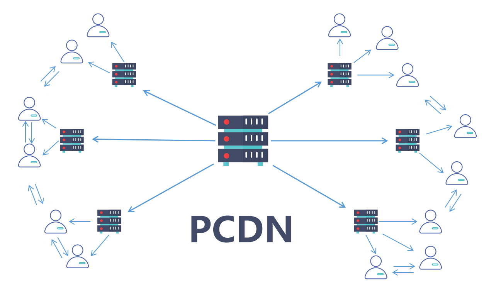
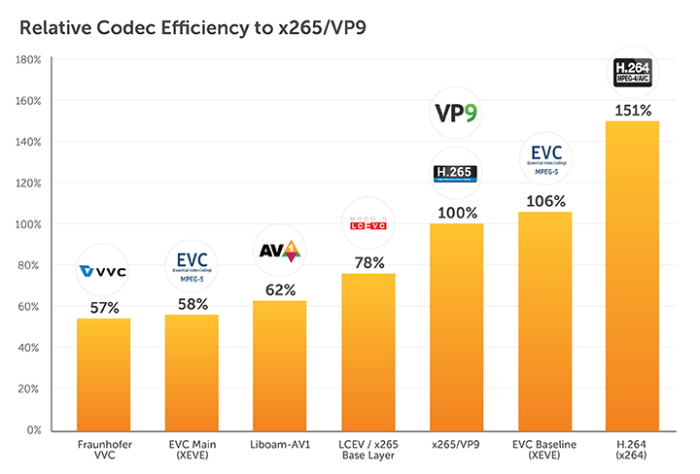

Optimizing Bandwidth Costs for Short Video Downloads
Introduction
The explosion of short-form video content on platforms like TikTok, YouTube Shorts has driven unprecedented demand for bandwidth. As users consume vast amounts of video content daily, service providers face the challenge of delivering high-quality experiences while managing escalating bandwidth and infrastructure costs. Optimizing bandwidth usage is critical not only for cost efficiency but also for ensuring scalability and sustainability in a competitive digital landscape. This blog explores why bandwidth optimization is essential, the trade-offs involved, and actionable strategies to achieve cost-effective video delivery without compromising user experience.
Why Optimize Bandwidth Costs?
The need for bandwidth optimization stems from several key factors:
- Cost Efficiency: Bandwidth is a significant operational expense for video platforms, especially with the rise of high-definition (HD) and 4K content. Reducing unnecessary data transfers directly lowers costs.
- Scalability: As user bases grow, unoptimized systems can lead to exponential cost increases, straining infrastructure and budgets.
- User Expectations: Modern users demand fast load times and seamless playback, even on variable network conditions. Efficient bandwidth use ensures low latency and minimal buffering.
- Environmental Impact: Reducing bandwidth consumption lowers energy usage in data centers and networks, contributing to greener operations.
Balancing these factors requires a strategic approach to resource allocation, leveraging cutting-edge technologies and data-driven insights.
Trade-offs Between User Experience and Optimization
Optimizing bandwidth often involves trade-offs with user experience (UX). For instance:
- Quality vs. Cost: Higher video quality (e.g., 4K resolution) enhances UX but increases bandwidth and storage costs. Lowering quality saves resources but risks user dissatisfaction.
- Latency vs. Preloading: Preloading content reduces playback delays but consumes bandwidth upfront, which may be wasteful for unwatched videos.
- Complexity vs. Simplicity: Advanced optimization techniques, like adaptive bitrate streaming, improve efficiency but require sophisticated infrastructure and monitoring.
The goal is to strike a balance where cost savings do not degrade the viewing experience. This requires intelligent systems that adapt to user behavior, network conditions, and content popularity.
Methods for Bandwidth Optimization
1. Leveraging Hybrid Content Delivery and Edge Computing Strategies
Peer-to-Peer Content Delivery Networks (PCDN)
A PCDN combines traditional Content Delivery Networks (CDNs) with peer-to-peer (P2P) technology. Unlike CDNs, which rely on centralized servers to cache and deliver content, PCDNs leverage user devices as temporary nodes to distribute data. This reduces reliance on origin servers and lowers bandwidth costs.

- What is PCDN?: PCDN operates by turning users’ devices into temporary distribution nodes. When a user requests a video, the system first checks for nearby peers who have already downloaded parts of the content. If available, data segments are fetched from these peers instead of the origin server or CDN edge nodes. This peer-assisted model is particularly effective for short video platforms where content is consumed in bursts and user density is high. For example, in live streaming or viral short videos, PCDN can handle peak loads by distributing the delivery burden across the user base. Technologies like WebRTC or proprietary protocols enable secure, real-time peer connections, ensuring data integrity and privacy through encryption and access controls.
- Advantages of PCDN:
- Cost Reduction: By utilizing users’ idle resources, PCDN can cut bandwidth costs to as low as one-quarter of traditional CDNs, as reported in various implementations.
- Scalability: It excels in handling high concurrency, such as during viral events, without proportional infrastructure scaling.
- Improved Performance: In regions with poor CDN coverage, PCDN can reduce latency by sourcing content from local peers.
- Bandwidth Efficiency: It minimizes redundant data transfers from origin servers, making it ideal for bandwidth-intensive short video downloads.
However, PCDN requires careful management to address challenges like peer churn (users leaving the network), varying device capabilities, and potential security risks.
- Comparison with P2P and CDN:
- PCDN vs. Pure P2P: Pure P2P networks, like those used in early file-sharing systems (e.g., BitTorrent), rely entirely on user devices for content distribution without centralized control. This makes P2P highly cost-effective and scalable but prone to inconsistencies—performance varies based on peer availability, leading to higher latency or incomplete transfers. Privacy and security are also concerns, as data passes directly between users. In contrast, PCDN integrates P2P with CDN infrastructure, using P2P opportunistically to offload traffic while falling back on reliable CDN servers for guaranteed delivery. This hybrid approach mitigates P2P’s variability, ensuring better quality of service (QoS) for video streaming.
- PCDN vs. Traditional CDN: CDNs use a network of geographically distributed servers to cache and deliver content closer to users, excelling in low-latency and reliable delivery. However, they are expensive due to high infrastructure and bandwidth costs, especially for global scale. PCDN enhances CDNs by incorporating P2P elements, reducing the load on CDN servers (up to 70-90% in some cases) and lowering costs without sacrificing reliability. For short video platforms, PCDN provides a cost-optimized alternative during peak times, while CDNs handle baseline traffic.
- How to Apply PCDN: To implement PCDN, platforms can integrate solutions from providers like Alibaba Cloud PCDN or open-source frameworks. Start by analyzing user distribution and content popularity to determine P2P offload ratios. Use SDKs for client-side integration, ensuring compatibility with mobile devices. Incentives, such as reduced ads or priority access, can encourage user participation. For short videos, focus on segmenting content into small chunks for efficient peer sharing.
Edge Node Utilization and Off-Peak Optimization
Edge computing brings content closer to users, reducing latency and bandwidth demands on origin servers.
- Pre-Warming Video Content: By analyzing viewing patterns, platforms can pre-cache popular videos at edge nodes during off-peak hours. For example, trending short videos can be pushed to edge servers overnight, minimizing peak-time origin fetches.
- Off-Peak Collaboration: Partnering with ISPs or cloud providers to leverage off-peak bandwidth for content distribution can further reduce costs. For instance, scheduling large-scale content updates during low-traffic periods optimizes resource use.
2. Encoding Optimization
Advanced Codecs: H.265/HEVC and AV1
Modern codecs like H.265/High Efficiency Video Coding (HEVC) and AV1 offer superior compression compared to older standards like H.264.
- H.265/HEVC: Achieves up to 50% better compression than H.264, reducing bandwidth while maintaining quality. However, it requires more computational power for encoding/decoding.
- AV1: An open-source codec developed by the Alliance for Open Media, AV1 provides even better compression than H.265 and is royalty-free, making it ideal for cost-conscious platforms. Its adoption is growing, especially for web-based streaming.

Intelligent Bitrate Control and Adaptive Transcoding
Not all videos require the same encoding parameters. By leveraging data analytics, platforms can optimize transcoding based on content popularity:
- Popular (Hot) Videos: Use multi-bitrate encoding with high-quality settings (e.g., H.265 at 4K) to ensure a premium experience. Adaptive bitrate streaming (ABR) dynamically adjusts quality based on network conditions.
- Long-Tail (Cold) Videos: Opt for lower bitrates or single-bitrate encoding to save storage and transcoding costs. For example, a rarely watched video might be encoded at 720p with a lower bitrate to minimize resource use.
- Implementation: Machine learning models can predict video popularity based on historical data, guiding transcoding decisions. Tools like FFmpeg can automate adaptive transcoding pipelines.
3. Transmission Strategies: Improving Effective Bandwidth Utilization
Segmented Downloads and Intelligent Preloading
Segmented downloads break videos into smaller chunks, allowing partial downloads and reducing wasted bandwidth if a user stops watching.
- Intelligent Preloading: By predicting user behavior (e.g., based on watch history), platforms can preload segments of likely-to-be-watched videos, reducing start-up times without overloading bandwidth.
- Implementation: Use HTTP-based protocols like MPEG-DASH or HLS (HTTP Live Streaming) for segmented delivery, coupled with predictive algorithms.
Advanced Transport Protocols: QUIC
QUIC, a UDP-based protocol, improves video delivery efficiency by reducing connection establishment time and handling packet loss better than TCP.
- Benefits: QUIC minimizes latency, supports multiplexing, and adapts to network congestion, ensuring smoother playback for short videos.
- Implementation: Platforms can adopt QUIC via libraries like quiche or integrate it with CDNs supporting HTTP/3.

4. Data and Storage Management: Reducing Redundancy and Implementing Intelligent Caching
Intelligent Storage Management
Efficient storage management reduces costs while ensuring content accessibility.
- Tiered Storage: Store frequently accessed (hot) videos on fast, expensive storage (e.g., SSDs) and move less popular (cold) videos to cheaper, slower storage (e.g., HDDs or cloud archives). Tools like AWS S3 Intelligent-Tiering automate this process.
- Proactive Cleanup: Regularly purge redundant transcoded versions of videos (e.g., unused low-bitrate copies) to reclaim storage space. Automated scripts can identify and delete outdated files based on access patterns.
Adaptive Bitrate and Compression Techniques
Dynamic adjustments to video resolution and compression optimize both bandwidth and storage.
- Dynamic Resolution Selection: Match video resolution to user device capabilities (e.g., 480p for mobile devices on slow networks, 1080p for desktops). ABR protocols like HLS enable this seamlessly.
- Efficient Image Formats: For thumbnails or preview images, use modern formats like WebP or AVIF, which offer better compression than JPEG, reducing storage and bandwidth needs.
Conclusion
Optimizing bandwidth costs for short video downloads requires a multifaceted approach. However, these efforts must be supported by a robust data monitoring system that tracks metrics like bandwidth utilization, stalling rates, and start-up times. Such a system enables continuous optimization, ensuring that cost savings align with user expectations. As video consumption continues to grow, platforms that adopt these strategies will be well-positioned to scale efficiently and sustainably.